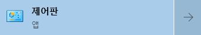
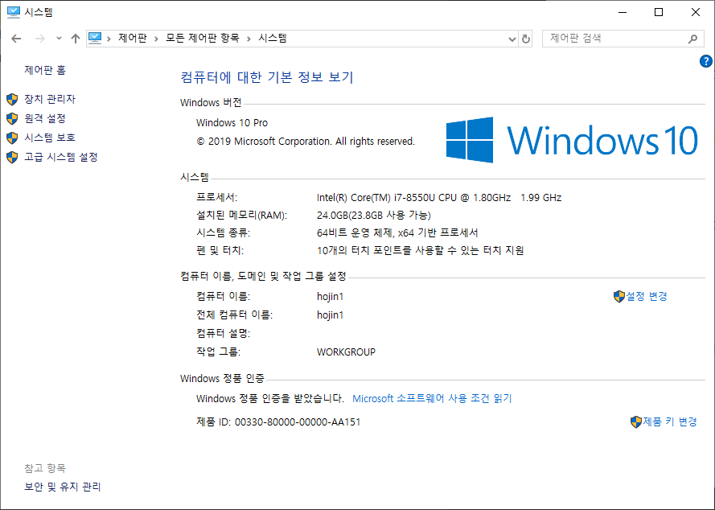
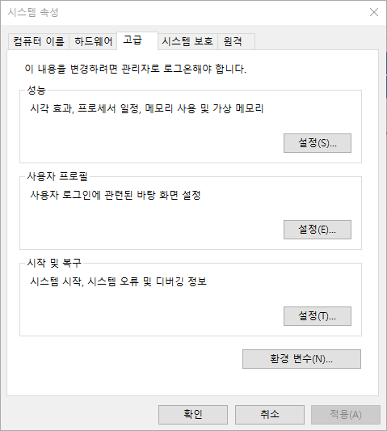
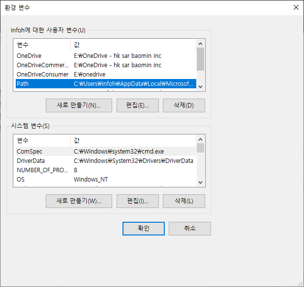
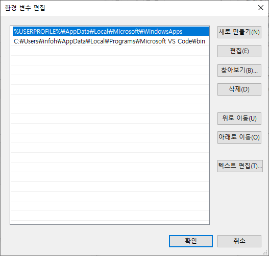

JINYDEV
다양한 IT기술관련 정보를 제공합니다.
개발에 관련된 시스템 및 도구 사용법과 프로그래밍에 대한 언어와 기법들에 대해서 같이 설명을 합니다.
학습량이 많은 쳅터는 별도의 저장로 이동하여 제공합니다.
개발에 관련된 시스템 및 도구 사용법과 프로그래밍에 대한 언어와 기법들에 대해서 같이 설명을 합니다.
학습량이 많은 쳅터는 별도의 저장로 이동하여 제공합니다.
윈도우는 분산되어 있는 디렉토리의 실행파일을 쉽게 접근할 수 있도록 path설정을 할 수 있습니다.
먼저 제어판을 실행합니다. 윈도우 검색창에서 제어판을 입력합니다.

제어판을 실행합니다. 제어판에서 시스템을 선택합니다.

왼쪽 메뉴에서 고급시스템 설정을 선택합니다.

하단의 환경변수를 선택합니다.

Path 항목을 선택후에 편집을 클릭합니다. Path 경로를 수정할 수 있는 창이 실행이 됩니다.

새로만들기를 클릭하여 경로를 추가합니다.
예를 들어 C:\Bitnami\wampstack-7.1.30-0\php\php.exe 파일을 실행할 수 추가하고자 합니다. 경로를 추가할 때는 실행파일을 제외한 경로만 입력을 합니다. C:\Bitnami\wampstack-7.1.30-0\php\만 적어 주시면 됩니다.